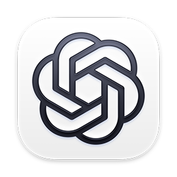
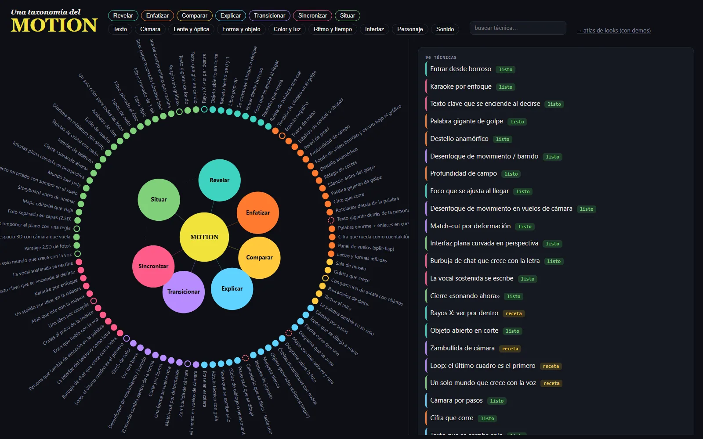
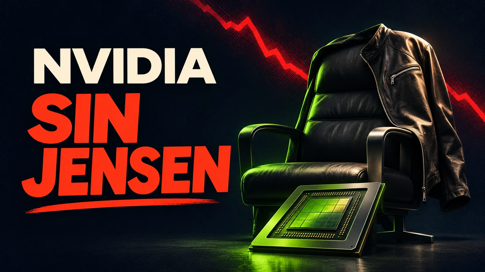
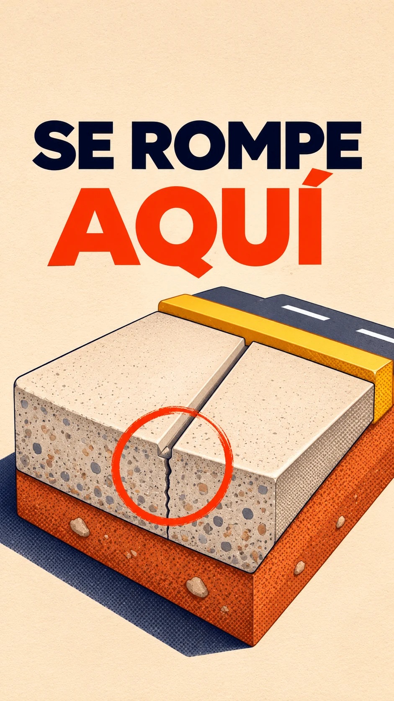
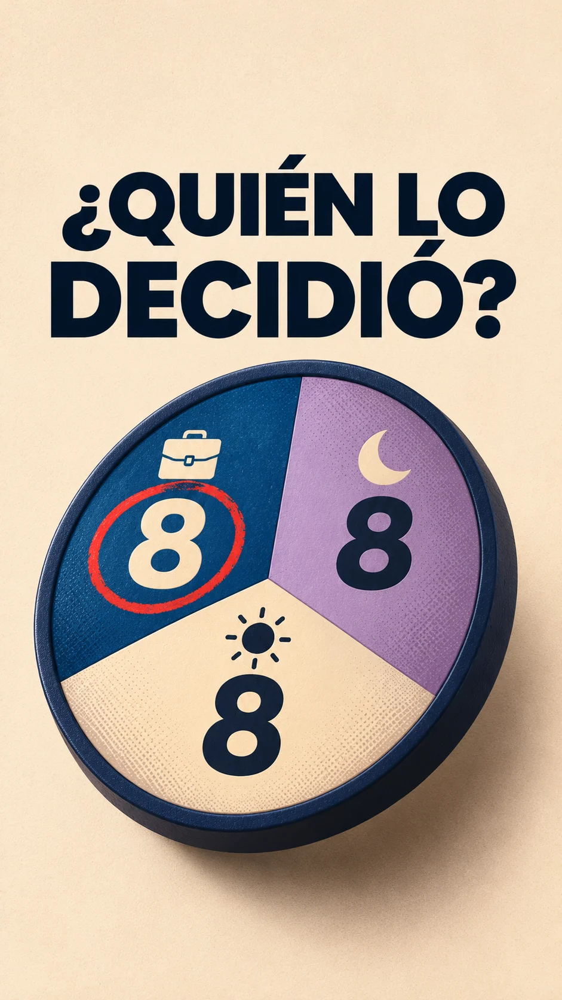

De la cereza a tu taza
editorial18 s
Ninjasux Motion Studio convierte a Claude Code o Codex en tu estudio de animación. Le escribes «hazme un reel de qué es un cuásar» y te entrega el video terminado: guion, voz, animación 2D y 3D, efectos, música y portada. En tu computadora, sin plantillas y sin saber animar.
US$25 US$15 pago único
+ CapCut Assistant de regalo
 Claude Code
Claude Code

Codex BONO«Esa estrella no es una estrella» · 15 s · salió de una frase en el chat
Cómo funciona
Tu asistente de IA ya sabe programar. Motion Studio le da todo lo demás: el motor de animación 2D y 3D, la voz, el sonido, los estilos y las reglas de dirección para que el video salga bien a la primera.
asistenteGuion listo: 4 frases, datos de la NASA. Un solo mundo: la cámara entra al puntito de luz y vuelve a salir.✓ voz · ✓ animación · ✓ música · ✓ portadaDespués de pagar te llega el enlace. Descomprímela donde quieras.
📁 ninjasux-motion-studioEn Claude Code o en Codex, abre esa carpeta como proyecto. Tu asistente lee las instrucciones que trae y ya sabe usarla.
Claude CodeCodexLa primera vez instala lo que falte (ffmpeg y, si quieres 3D, Blender) y te enseña los ejemplos. Después, solo pides.
«Prepárate e instala lo que haga falta. Luego hazme un reel de por qué el pan se pone duro.»Versión 6 · 30 segundos
Se instala con una frase, le pides el vídeo como a una persona, un cerebro de 96 técnicas decide cada plano, eliges entre más de 20 looks y el montaje cae solo al pulso de tu música.
El cerebro
Una taxonomía del movimiento: para cada momento del guion (revelar, enfatizar, comparar, explicar, transicionar, sincronizar, situar) tu IA elige la técnica, sabe qué comunica y tiene el código listo. Cada técnica trae ejemplos reales con su segundo exacto. Por eso los vídeos no salen genéricos.

Atlas de looks
2D, 3D realista con Blender, 3D rápido sin Blender (sale en minutos y funciona sin tarjeta NVIDIA), mapas de cualquier país, documental, editorial, acuarela… y filtros de acabado como óleo, lápiz o papel recortado. Un atlas los enseña todos para elegir en segundos.

Guiones de cualquier nicho
Ejemplos reales
Cada uno empezó con una pregunta escrita en el chat. La animación, el texto, los sonidos y el montaje los hizo la herramienta; la voz es de ElevenLabs. Dale play con sonido.
Antes del primer segundo
Del tema a una pregunta visual. Siete ejemplos de Todo a Propósito, creados con IA y dirigidos para cada contenido. Abre una imagen para verla completa.

YouTube horizontal · 16:9
Una silla vacía, una chamarra y tres palabras. El concepto cambia con el tema: detalle, escala, mecanismo o una decisión.





Incluido para compradores
El asistente de portadas prepara prompts en tu computadora, sin conexión ni claves. La generación de la imagen se hace por separado, con tu propia cuenta de IA.
Una conexión (MCP) que deja a tu asistente de IA abrir y revisar tus proyectos de CapCut de escritorio. Animas con Motion Studio y terminas de editar en CapCut, con tu IA como segundo par de ojos.
Estilos incluidos
Medido, no prometido
| Video | Duración | Render final |
|---|---|---|
| Persona 2D (borrador) | 18 s | 13 s |
| Documental de archivo: la torre | 33 s | ≈1 min |
| Solo 2D: datos y cifras | 30 s | 2 min |
| Imprenta: la olla exprés | 36 s | 18 min |
| Acuarela: un objeto en una mesa | 30 s | 23 min |
| Producto realista: palomitas | 30 s | 54 min |
En una computadora con NVIDIA RTX 4060. La herramienta mide la tuya en 2 minutos y te da esta tabla con tus tiempos. Hay cuatro niveles de calidad, de borrador rápido a «cine».
Lo que necesitas
Claude Code o CodexCon una suscripción de Claude (Pro o superior) o de ChatGPT (Plus o superior). Se paga aparte.Lo que te llevas
Precio de lanzamiento 6.0
Termina en 48 h (martes 17 de noviembre, 23:59 hora del centro de México). Después sube a US$25. Los videos que hagas son tuyos y no pagas regalías.
Comprar ahoraPago seguro con tarjeta vía Stripe · ¿Dudas? oscar_8291@hotmail.com
Preguntas
No. Le pides las cosas a tu asistente de IA en el chat y él escribe y ejecuta todo. Tú revisas los borradores y decides.
Son asistentes de IA que trabajan dentro de tu computadora: leen archivos, escriben código y lo ejecutan. Claude Code es de Anthropic y Codex es de OpenAI. Motion Studio trae instrucciones para los dos. Si ya pagas Claude o ChatGPT, usa el que tengas.
El video se crea conversando con tu asistente: cada pieza se arma para su tema. Algunas utilidades, como el asistente de portadas, también tienen un formulario local.
Incluye un asistente para compradores que prepara tres prompts según tu tema, formato y marca. Funciona sin conexión ni claves. Copias el prompt en el generador de imágenes que elijas, con tu propia cuenta y sus condiciones. Las imágenes de muestra se generaron con IA y se revisaron; el resultado depende del modelo y de tu dirección. El video también conserva su portada de fotograma.
Es una conexión (MCP) que instala tu asistente en un minuto. Con ella puede leer tus proyectos de CapCut de escritorio, revisar el corte y el video exportado, y colocar tus animaciones en una copia del proyecto. Nunca modifica tu edición original.
Puede ser gratis: la 6.0 trae una voz natural que corre en tu computadora (Chatterbox, sin créditos ni cuentas; se baja aparte, unos 4 GB). Si prefieres ElevenLabs, usa tus créditos: unos 400 a 600 por reel de 30 segundos. También puedes usar tu propia grabación.
No. Hace personas dibujadas, mascotas y objetos con cara. Para personas reales usa tu propio video y pon las animaciones encima con el estilo «gráficos sobre video».
Sí. Puedes publicarlos y usarlos para tus clientes. Lo que no se permite es revender o compartir la herramienta.
Pagas con tarjeta en la página segura de Stripe. En menos de 24 horas te enviamos el enlace de descarga y la guía de instalación al correo o WhatsApp que dejaste al pagar.
Por ser un producto digital, no hay reembolsos una vez entregado. La excepción: si no logras instalarla en tu computadora y no podemos resolverlo juntos en 7 días, te devolvemos el 100%. Escríbenos a oscar_8291@hotmail.com.
US$15 solo hasta el martes 17, con el CapCut Assistant de regalo. Después, US$25.